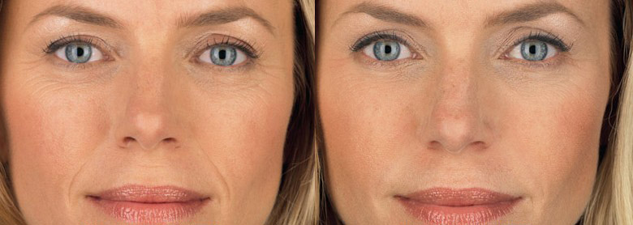

Ahoj všichni! Dívky, chci se podělit o své šťastné zprávy - můj manžel včera řekl, že přemýšlí o třetím dítěti. Ale před šesti měsíci jsme byli na pokraji rozvodu, dokážete si to představit. Situace byla zachráněna náhodným setkáním s přítelkyně a ... malou trubicí anti-age krém. Ale o všem popořadě.
Cesta od královny krásy k hlupáci
Na vysoké škole jsem byla nejkrásnější dívka. Kamarádky byly strašně žárlivé - kudrnaté černé vlasy, prsa třetí velikosti, úzký pas, hezká tvář ... A prakticky jsem si neoblékla make-up, protože i během PMS zůstala pokožka svěží a zářivá, bez jediného pupínku. Kluci byli blázni do této přírodní krásy a já jsem chodila na rande téměř každou noc. Ale to je tak, kluziště, nic vážného.

Ale jednoho dne se jeden muž přestěhoval do naší skupiny. Hezký a tichý, seděl ve svých myšlenkách po celou dobu a jaká ostuda, nevěnoval mi vůbec žádnou pozornost. Ale něco na mě kliklo! Pro takové kruté muže jsem vždycky měla slabost, tak jsem se rozhodla jednat. Mírně změnila styl oblečení a místo sukní, jedla pokrývající dno, začala nosit dlouhé ležérní šaty a začala číst více. A když na něj narazila na večírku, náhodně hodila frázi svému oblíbenému spisovateli - a mluvili jsme až do rána, nikoho si nevšimli. A od té chvíle jsme se nikdy nerozloučili. Byla jsem ohromena tím, jak vášnivý je náš vztah, protože na první pohled byl Zdeněk chladný a rezervovaný. Po několika měsících začali žít společně, pak zasnoubení, svatba ... A nyní naše dvě malé kopie běží kolem obývacího pokoje - Marie a Eva.
A všechno by bylo naprosto v pohodě, ne-li z jednoho důvodu - hodně jsem se změnila. Svou práci vykonali dvě vyhlášky - hrudník se prohnul, pas zmizel, kůže se zhoršila. Někdy, když můj manžel pracoval, jsem otevřel album se studentskými fotografiemi a nemohl jsem zadržet slzy. Jsem v zrcadle a já na těch fotkách jsou dva různí lidé. Viděla jsem, že Zdeněk ke mně začal zacházet jinak, zmizel v práci, odmítal sex. Neobviňuji ho, protože ani já bych nechtěl být takhle. Neměla jsem žádné přítelkyně, protože jsem byla zpočátku fascinována Zdeňkem, a když se dívky objevily, pak všechny mé výlety z domova byly na procházku s mými dcerami nebo do obchodu na koláče. A abych byla upřímná, stydím se za setkání se starými známými v této podobě ... Ale jednoho dne jsme se při návratu z obchodu s manželem setkali s jeho kolegou a vzal mě za Zdeněk matku !!! Co by mohlo být pro ženu ponižující? Nic se mi nezdá. A rozhodla jsem se jednat.
Zkusila jsem všechno, abych neztratit svého milovaného
Začala jsem dělat domácí cvičení doma a se svými dcerami jsme místo sledování karikatur začali hrát v parku míč nebo badminton. Také jsem revidovala výživu. Ukázalo se, že je to snazší, než jsem si myslela, protože jsem vždy vařila dobře a nyní na internetu najdete spoustu jednoduchých receptů. Obecně se váha začala vytrácet. A za 8 měsíců jsem se vrátila do svého normálního stavu. Roky si samozřejmě vybírali mýtné a tělo nebylo stejné jako na vysoké škole. Snažila jsem se se vší silou odstranit celulitidu a nějak snížit strie, dokud jednoho dne v montážní místnosti jsem neviděl obličej zblízka. Ano, udělala jsem, protože v posledních měsících jsem se dívala výhradně pod krk. Vypadala na mě vyčerpaná žena asi 50 let - její tvář byla pokryta vráskami a nějakými skvrnami, taškami pod očima, kůže byla ochablá a šedá, dokonce i obrys obličeje plaval. Jen jsem byla ohromena - je to výsledek rychlého hubnutí nebo jsem to prostě rád, jen na pozadí nadváhy nebyly problémy s obličejem tak znatelné?
Vyděšená, vyběhla jsem z montážní místnosti a nikdy jsem si nekoupila takovou luxusní negližé, za kterou jsem přišla. A samozřejmě to byl ten pravý okamžik, kdy potkat přítelkyně z vysoké školy - nakupovala ve stejném obchodě s prádlem. Markéta nebyla nikdy krásná, ale teď vypadala nádherně, zvlášť proti mně. Mluvili jsme o tom a to, vzpomnělo si na naše, ukazovalo navzájem fotografie dětí. A samozřejmě se zeptala, jak je Zdeněk. Povzdechla jsem si a řekla, že jeho kariéra vzlétla a dokonce si myslel, že zahájí soukromou praxi. Rozhodně jsem nechtěla mluvit o našich rodinných problémech, zvláště když jsem si uvědomila, že najednou byla také zamilovaná do Zdeněka. A pak jsem si všimla v jejích očích zmatek a nějaké ... škoda. Je mi líto. Kamarádka se zeptala, co se stalo té ohnivé dívce, kterou jsem byla na škole. A dodala, že mě stěží poznala.
Byla jsem vděčná za její upřímnost, tak jsem se zeptala, jestli doporučí nějaký hustý BB krém, který by skrýval alespoň některé z mých vrásek. Jak se ukazuje, funguje to pouze na akné a pigmentaci a žádný nadace neskrývá změny v kůži související s věkem. Ale naštěstí pro mě Markéta pokračovala a hovořila o kosmetickém produktu, díky němuž vypadala ještě chladněji než ona, když jí bylo 20.
Tak jsem se dozvěděla o . Nebudu říkat, že jsem si ho objednala s velkým nadšením, protože nevěřím v jednoduchá řešení jakýchkoliv problémů, ale nebylo co ztratit, protože za pár měsíců můj manžel plánoval velkou manželku s manželkami. Důvěra byla inspirována doporučením staré přítelkyně a složení - kyselina hyaluronová, kolagen, všechny druhy vitamínů ... Vypadá to jako obyčejný krém, ale k mému překvapení se pleť po týdnu používání změnila. Místo zemitosti - svěží vzhled a ruddy tváře. A po měsíci se začaly vyhlazovat velké mimické vrásky a malé zmizely úplně. Pigmentace je také minulostí. Moje nejstarší, Marie, začala říkat, že měla nejkrásnější matku. Ale nejlepší ze všeho je, že se můj manžel začal vracet domů brzy z práce a pozval mě ke skutečným datům. Dlouho očekávaná firemní párty šla dobře, vypadali jsme jako hollywoodský pár. Samozřejmě nezapomínám na Markéta a její roli v tom všem, protože její rada zachránila moji sebeúctu a možná i manželství. Navázali jsme s ní komunikaci a znovu jsme šli na kávu a nakupování, kde si vyměňujeme nejrůznější tajemství krásy.
Dívky, nezapomeňte na sebe! Výchova dětí, čištění, krmení manžela je velmi důležité, ano. Ale je mnohem důležitější zůstat ženou, sexy a se zábleskem v očích. Přestaňte počítat a plýtvat svým rodinným rozpočtem na cokoliv, jen ne na sebe. Kupte si stejný taneční pas nebo krém proti stárnutí . Když je žena krásná a spokojená, z toho má každý prospěch!
Sledujete sami sebe nebo se vzdáte? Co děláte z procedur péče?
P.S.: Odpovídám na nejčastější otázku, vzala jsem , toto je jejich oficiální web.
23 komentářů
Andrea Gondeková
Publikováno před 2 hodinami
Dvakrát ročně dělám masážní kurz s kosmetičkou. Výsledek je skvělý, ale opravdu zasáhne rozpočet ... Možná byste si měli tento krém objednat sami.
Martina
Publikováno před 4 hodinami
Jo, a vím . Moje máma to použila, výsledek je nádherný, vypadá jako přítelkyně. Ještě to nepotřebuji, ale myslím, že po 5 letech to začnu používat, alespoň pro prevenci
Vlasta Chlubná
Publikováno před 4 hodinami
Proč tvé přítelkyně nezvedla manžela?
Ivana Trčková
Publikováno 5 часов назад
Nebuď hloupý! Má šťastnou rodinu a teď i já !!
Vrbová Ludmila
Publikováno před 10 hodinami
Nádherný nástroj! Koupila jsem to před šesti měsíci, také se slevou. Vyplatilo se to okamžitě, protože jsem měla jít pod nůž - pod očima byly takové tašky, které v nich alespoň udržovaly brambory. Dívky, neukládej se k těžkému dělostřelectvu, pokud se dá vše vyřešit jednou nádobou!
Dana Čipčalová
Publikováno včera
Zajímavé je, že jednoho dne kolega vyprávěl o . A ve čtyřicátých letech je velmi efektivní ženou! To je přímý znak shora, nějak dělám všechny domácí masky, ale nemá žádný smysl.
Gabriela Urbanová
Publikováno včera
A já dělám všechno. A kosmetička pro procedury a různé druhy drahých krémů, které kupuji, a nejím sladkosti. Zdá se, že to funguje.
Žaneta Kubková
Publikováno včera
Na pozadí hormonální nerovnováhy mám po celém obličeji pigmentaci, nosím brýle a dokonce chodím do obchodu v plných šatech !! Pomáhá to ? Jinak můj kosmetička už neví, co se mnou dělat. Kde jste si objednali krém?
Ivana Trčková
Publikováno včera
Ano, Žaneto, i moje tvář byla zbarvená! Kyselina askorbová v běleném složení. Objednal jsem si tady.
Adéla Burgerov
Publikováno včera
Ach, děti, ano, můj syn včera řekl: „Mami, máš na čele tak krásné pruhy“. Probudila jsem se a uvědomila jsem si, že potřebuji něco udělat s „pruhy“. A tady je příspěvek v tématu.